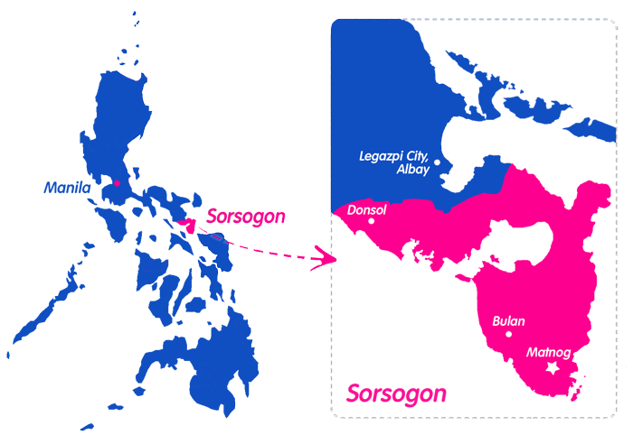

Location
The southern tip of Luzon
Sorsogon occupies the southernmost end of the Bicol Peninsula, bounded by Albay to the north, the Pacific Ocean to the east, San Bernardino Strait to the south, and Ticao and Burias passes to the west.
Its terrain ranges from volcanic peaks rising to 1,565 meters, to coastal plains, river valleys, and a 200-kilometer coastline deeply indented with bays and coves rich in marine life.

Data
Geographic facts
| Feature | Detail | Notes |
|---|---|---|
| Total Land Area | 2,140 km² | Including offshore islands |
| Highest Point | Bulusan Volcano — 1,565 m | Active stratovolcano |
| Coastline Length | ~200 km | Pacific & San Bernardino sides |
| Number of Municipalities | 14 | Plus 2 component cities |
| Main Rivers | Sorsogon River, Irosin River | Drain to coastal bays |
| Notable Lakes | Bulusan Lake, Lake Bato | Volcanic & tectonic lakes |
| Major Bays | Sorsogon Bay, Bacon Bay, Donsol Bay | Rich marine ecosystems |
| Climate Type | Type IV | No pronounced dry season |
Municipalities
Administrative divisions
Sorsogon City
The provincial capital and largest commercial center, gateway to the province.
Donsol
World-famous for whale shark watching and firefly tours along the Ogod River.
Irosin
Home to Bulusan Volcano, fertile valley rice fields, and geothermal hot springs.
Gubat
A coastal town known for surfing beaches and vibrant marine life.
Bulusan
Gateway to Bulusan Lake and the Bulusan Volcano Natural Park.
Barcelona
A coastal town with traditional boat-building heritage.
Matnog
Southernmost point of Luzon — gateway to islands and ferry terminal to Samar.
Castilla
Known for its fishing communities and freshwater resources.